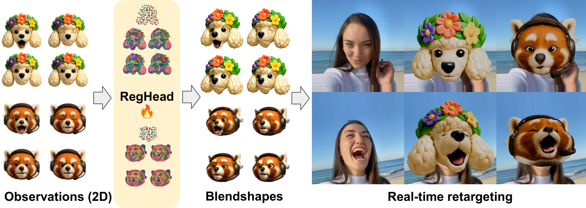
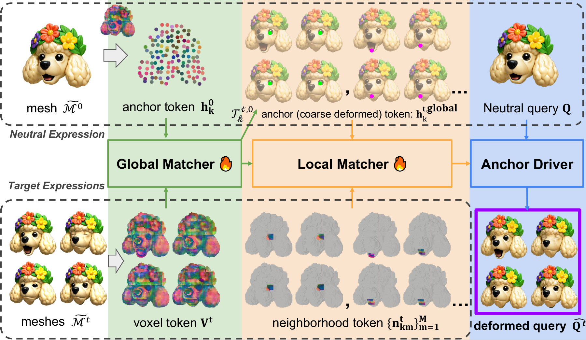

A large-scale dataset of non-humanoid heads, each rendered across the same ten facial expressions — drag the slider and watch every identity move together.
We present RegHead, a framework for constructing semantic blendshape sets for animatable non-humanoid head avatars. With a fixed expression vocabulary, semantic blendshapes provide a low-dimensional and interpretable animation interface and support cross-identity retargeting. Building such blendshape sets remains expensive because (i) expression-consistent supervision is scarce, (ii) generated 4D assets typically lack correspondence, and (iii) facial motion is highly localized. We propose (1) a large-scale dataset of non-humanoid identities paired with a shared expression vocabulary, obtained by expanding a small artist-rigged library via fine-tuned image editing; (2) a dense stochastic anchor motion representation tailored to localized facial deformations; and (3) a fast feed-forward registration model that converts unregistered expression meshes into a corresponded blendshape basis by predicting anchor-based deformations from the neutral shape. Experiments show that our approach produces higher-fidelity expression meshes than baselines, while running orders of magnitude faster than optimization. We further demonstrate real-time retargeting from human face tracking signals to non-humanoid characters, capturing both head pose and localized facial motions.
Each identity is one distinct animal head rendered across 10 fixed facial expressions. Because every identity shares the same expression vocabulary, the dataset provides aligned cross-expression pairs for a fixed identity — exactly the supervision needed for blendshape learning, expression editing, and identity-preserving animation.
Identities are sampled as combinations of an animal (~270 species), a render style (4), a facial feature (~38), and 1–2 accessories (~57) — producing broad visual diversity across the population. Every image is model-generated; no real photographs are included.
~59% of identities are newly generated for this release; the remaining ~41% come from an earlier batch using the same expression vocabulary and models.
Styles are sampled near-uniformly across the four render looks.
A three-stage generative pipeline: create a base head, neutralize it into a clean reference, then edit it into each expression with chained, expression-specific adapters.
A seeded prompt (animal × style × feature × accessories) renders the base identity head.
OpenAI gpt-image-1The base head becomes a clean floating-head reference on a white background — the open_m_open_e frame.
LoRA adapters chain-edit the reference into the remaining 9 expressions, keeping identity fixed.
Qwen-Image + LoRA| 512 release | 1024 release | |
|---|---|---|
| Resolution | 512 × 512 | 1024 × 1024 |
| Image format | JPEG q95 | JPEG q95 |
| Identities | 33,724 | 33,724 |
| Images | 337,240 | 337,240 |
| Shards (.tar) | 11 | 34 |
| Total size | 18.96 GiB | 58.79 GiB |
| Best for | fast prototyping, light training | high-res training & evaluation |
Identical identity sets, expressions, metadata, and per-sample layout — only the resolution and size differ. Train on 512, scale to 1024 without changing any data-loading code.


All results below are produced by RegHead. Each clip pairs the input with our output (baselines cropped out). Videos autoplay, muted, when scrolled into view.
Linear interpolation in the registered blendshape basis, morphing the neutral shape toward each target expression.
Real-time retargeting from a human face-tracking signal to non-humanoid characters, transferring head pose and localized facial motion.